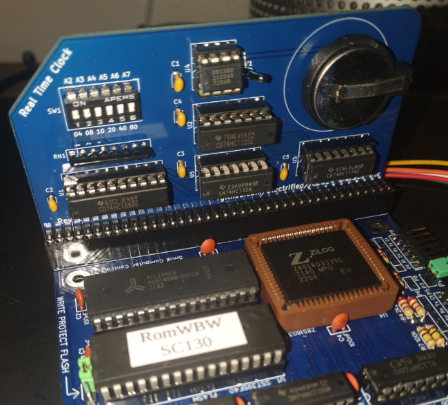

Some thoughts on a DS1302 real-time clock board for RC2014/Z80 and CP/M
 This article in one of my series
Adventures with RC2014, Z80, and CP/M.
This article in one of my series
Adventures with RC2014, Z80, and CP/M.
It's always struck me as odd, and short-sighted, that CP/M did not mandate the presence of a real-time clock. Not only does this mean that files can't have timestamps, a whole bunch of useful utilities, that need to know the date, become irritating because you have to supply the date each time you use them.
So the first thing I constructed for my new Z80 system, which uses the RC2014 bus for connecting components, was a real-time clock.
Choice of design
My Z80 system uses Wayne Warthen's ROMWBW BIOS, so I wanted an RTC design that was supported by the ROMWBW firmware. Why? I have only modest skill in assembling electronic devices, and comparably modest skill at assembly-language programming; taken together, these factors add up to a whole lot of incompetence. While I do intend to use my own code to interact with the RTC, I wanted a way to be sure I had built something that works first. Then at least I could eliminate my inadequate programming from the troubleshooting (good thing too, it turned out).
Although ROMWBW supports (IIUC) six different RTC designs, the only one I could find that is well-documented, with readily available parts, is the one by Ed Brindley. Full plans for this design are available in a GitHub repository; in particular, there is a circuit diagram, to which I'll refer later.
Although bare PCBs are sometimes available for this type of equipment, I bought a complete kit from Z80kits. Although this kit contains all the parts (apart from the battery), you'll need at least modest soldering skills to put it together. And decent eyesight, or a desktop magnifier.
Construction
So far as I know, there are no detailed assembly instructions. I don't know if I didn't look hard enough, or if the suppliers just thought it would be obvious. The GitHub repository has close-up photos of the assembled board and, although assembly was straightforward, a few things stumped me.
First, the in-line resistor network (RN1 on the circuit diagram) has no obvious 'pin 1' indicator, although the location of pin 1 is marked on the PCB. I had to work out which was pin 1 with a meter.
Second -- and this continues to baffle me -- the PCB has 39 terminals on its edge, not the 40 of the RC2014 bus. The kit was supplied with a 40-way header, and I think cutting it down to 39 pins would be a mistake, as it wouldn't be clear how to plug it in into the backplane. But leaving the header at its original length means that one of the pins just dangles, and isn't connected to anything.
Making the PCB this way does make it 0.1 inches shorter, and I wonder whether it was perhaps designed to fit into some sort of enclosure? Anyway, this was a real head-scratcher.
Third, the documentation on the GitHub repository says that the 'preferred' port address for this unit is 0xC0. However, ROMWBW (at least, the version I have) assumes 0x0C. These two numbers are similar enough -- at least to a numpty like me -- for me to set the board up with the wrong port address at first. This led to about three hours of unnecessary fault-finding. So it's a good job I wasn't writing the software as well, as I would have been trying to troubleshoot hardware and software at the same time.
Once I had the address set properly, the board just worked. Leaving aside the confusion caused by the address, it only took an hour to assemble and test, and I have no great skill at this kind of thing.
The photo below shows the completed board, plugged into an SC130 motherboard for testing.

The design
The hardware design is simple, leaving the CPU and application software to do most of the heavy lifting. A conventional 74688 (U1) address decoder determines when the RTC board is being addressed by its port, and a bunch of XOR gates combine this port detection with the general read and write lines from the bus, to distinguish reads and writes on the board's port. The bus data lines are captured by a 74174 latch, triggered by the decoded write signal. The captured data lines are used to drive the clock, chip enable, and I/O pins on the DS1302 clock chip (U4).
The clock chip itself uses a three-wire serial interface, and the CPU and application have the job of bit-banging the serial data by the correct sequence of reads and writes on the bus -- the board itself does not do any of this work. I guess an alternative approach would be to use some sort of shift register and clock to do the serial/parallel conversion on the board. This would make programming easier, at the expense of doubling the chip count.
Using the RTC board with CP/M and ROMWBW
The ROMWBW implementation of CP/M is supplied with a simple utility
RTC.COM that can get and set the time and date. It's a little
fiddly to use, but worked well enough to test the board.
The ROMWBW BIOS also has documented function calls that applications can use to read and write the RTC registers. So a simple way to get the date and time in a Z80 assembly-language program could be:
LD HL, dtbuff
LD B, 020h ; Function code for get time
CALL 0FFF0h ; Call BIOS
dtbuff:
db 0,0,0,0,0,0
On exit, the six bytes of dtbuff will be populated with
year, month, day, hour, minute, and second values. These will be in
binary-coded decimal -- presumably because that's how the clock chip
supplies the data. Converting to ordinary binary is simple enough.
On a CP/M system that doesn't have ROMWBW BIOS, you'll have to use whatever software is available (if any), or write your own code to drive the serial interface of the DS3201.
Closing remarks
Assembling the RTC board was easy enough -- at least using a professionally-made PCB. All the parts are neatly laid out, and there's little fiddly soldering. A couple of glitches in documentation made the process a bit more awkward than it needed to be, although a person who is more experienced at this kind of construction may have been less easily misled.
The design and construction are period-authentic; that is, there are no secret microcontrollers or surface-mount parts.